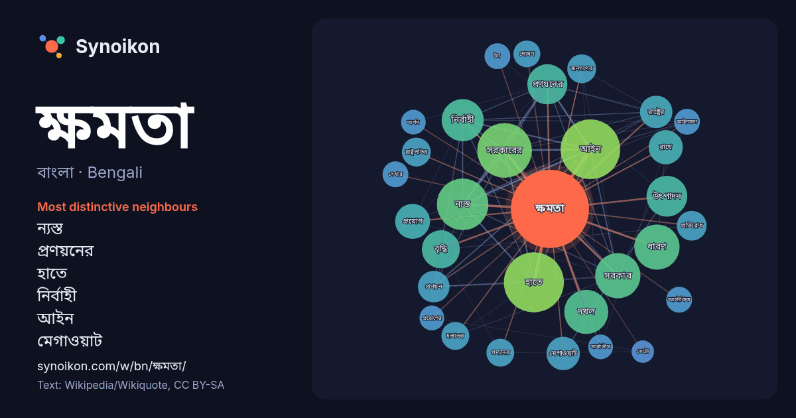

বাংলা · Bengali · popular word
ক্ষমতা
“power” · The words found around it in 1158 instances from Bengali Wikipedia, Wikiquote.

Most distinctive neighbours
- ন্যস্ত 41×
- প্রণয়নের 27×
- হাতে 23×
- নির্বাহী 21×
- আইন 21×
- মেগাওয়াট 18×
- সরকারের 17×
- ধারণ 17×
- প্রণয়ন 15×
- রাষ্ট্রের 13×
- দখল 13×
- রাষ্ট্রপতির 13×
- উৎপাদন 13×
- হস্তান্তর 12×
- শোষণ 12×
- অলৌকিক 12×
- প্রয়োগ 11×
- আইনসভা 11×
- সার্বভৌম 11×
- অর্পণ 11×
× = how many times more often than in general Bengali Wikipedia text.
Most frequent neighbours
- হাতে 65
- আইন 64
- সরকারের 54
- ন্যস্ত 48
- ধারণ 37
- সরকার 37
- দখল 35
- নির্বাহী 32
- উৎপাদন 30
- প্রণয়নের 29
- বৃদ্ধি 26
- রাজনৈতিক 23
- প্রয়োগ 22
- রাখে 21
- মেগাওয়াট 20
- লাভ 20
- প্রধান 19
- রাষ্ট্রের 19
- সামরিক 19
- অর্জন 18
In context
- ক্ষমতা শব্দটি ক্ষেত্র বিশেষে শক্তি, সামর্থ্য বা দক্ষতাকে নির্দেশ করে। ক্ষমতা (পদার্থবিজ্ঞান), একক সময়ে কাজ করার শক্তি। ক্ষমতা (সামাজিক ও রাজনৈতিক), এটি Wikipedia snippets · ক্ষমতা
- "কার্যকলাপ"-ও বলা হতো ক্ষমতা একটি স্কেলার রাশি। ক্ষমতা অন্যান্য পরিমাপের সাথেও সম্পর্কিত; উদাহরণস্বরূপ, একটি স্থল যান চলাচলের জন্য প্রয়োজনীয় ক্ষমতা যানটির চাকার Wikipedia snippets · ক্ষমতা (পদার্থবিজ্ঞান)
- এটি পরিবহন করা হয়। বৈদ্যুতিক ক্ষমতা বিপণনের একক কিলো-ওয়াট ঘণ্টা। বৈদ্যতিক শক্তি, যা যান্ত্রিক শক্তির মত, কাজের ক্ষমতা এবং পরিমাপ করা হয় ওয়াট দিয়ে। Wikipedia snippets · বৈদ্যুতিক ক্ষমতা
- একটি সুচিন্তিত পরিষদ। আইনসভা বেশিরভাগ সরকারের গুরুত্বপূর্ণ অংশ গঠন করে; ক্ষমতা বিকেন্দ্রীকরণ মডেলে তারা প্রায়শই সরকারের নির্বাহী বিভাগ ও বিচার বিভাগের Wikipedia snippets · আইনসভা
- প্রজনন ক্ষমতা হল সন্তান উৎপাদনের প্রাকৃতিক ক্ষমতা। একটি পরিমাপ হিসাবে, প্রজনন হার হল প্রতি সঙ্গমের জোড়, ব্যক্তি বা জনসংখ্যা অনুসারে জন্ম নেওয়া মানুষের Wikipedia snippets · প্রজনন ক্ষমতা
- রোগ সৃষ্টিকারী ক্ষমতা কথাটির অর্থ প্রকোপ (virulence) নামক আরেকটি পরিভাষার সাথে সম্পর্কিত। কিছু স্বাস্থ্য কর্তৃপক্ষ "রোগ সৃষ্টিকারী ক্ষমতা" পরিভাষাটিকে গুণগত Wikipedia snippets · রোগ জীবাণু
- বৌদ্ধ ধর্মগ্রন্থগুলিতে গৌতম বুদ্ধের অলৌকিক ক্ষমতা ও ক্রিয়াকলাপগুলির উল্লেখ পাওয়া যায়। বৌদ্ধ মতে, কোনও দৈব উপায়ে নয়, বরং ধ্যানের মাধ্যমে লব্ধ অতিলৌকিক Wikipedia snippets · গৌতম বুদ্ধের অলৌকিক ক্ষমতা ও ক্রিয়াকলাপ
- ছড়িয়ে দেয়, শোষণ ক্ষমতা সংজ্ঞায়িত হতে পারে "একটি সুষম নমুনায় পরিমাপ করা শোষণ ক্ষমতার এক পদ্ধতির অন্তর্গত 'এক' থেকে শোষণ ক্ষমতা বাদ দিয়ে তার ঋণাত্মক Wikipedia snippets · শোষণ ক্ষমতা
More Bengali words
- অরণ্য
- আয়না
- ইতিহাস
- ঈশ্বর
- কাজ
- কুকুর
- খাদ্য
- গান
- গ্রীষ্ম
- ঘড়ি
- ঘণ্টা
- ঘোড়া
- ছায়া
- জননী
- জলবায়ু
- জীবন
- ঝড়
- টাকা
- ট্রেন
- দারুচিনি
- দ্বীপ
- নক্ষত্র
- নীরবতা
- পরিবার
- পানি
- পাহাড়
- প্রকৃতি
- বাগান
- বিজ্ঞান
- বিড়াল
- বৃষ্টি
- ভাষা
- মধু
- মরুভূমি
- মানচিত্র
- মৃত্যু
- রাস্তা
- রুটি
- লবণ
- শরৎ
- শহর
- শিল্প
- শীত
- সত্য
- সময়
- সেতু
- সোনা
- স্বাস্থ্য
- হৃদয়
Precomputed on 2026-10-09 with default settings (±5 words, medium corpus). The interactive map can refresh it with live data.